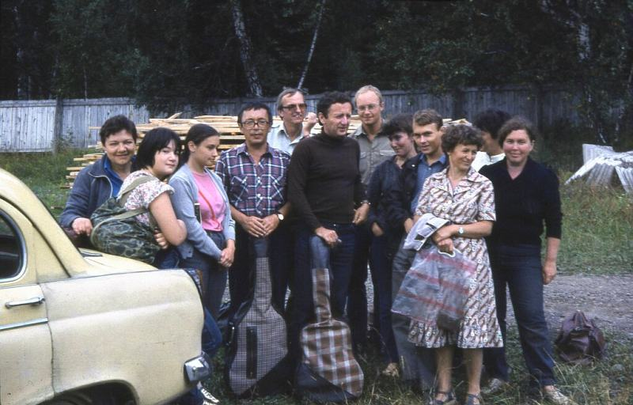
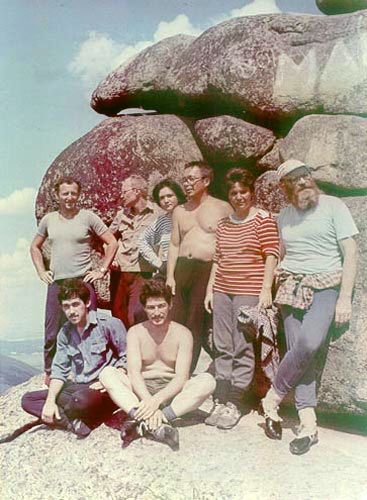

| Фотография 1986 года, Красноярский край. |
|---|
 Автор nicolya, оригинал здесь. За наводку спасибо riftsh. |
 Еще одна фотография того же года, Красноярские Столбы (согласно свидетельству Ю. Кима - столб Черепаха). |
| Дополнения: ссылки раз и два. |